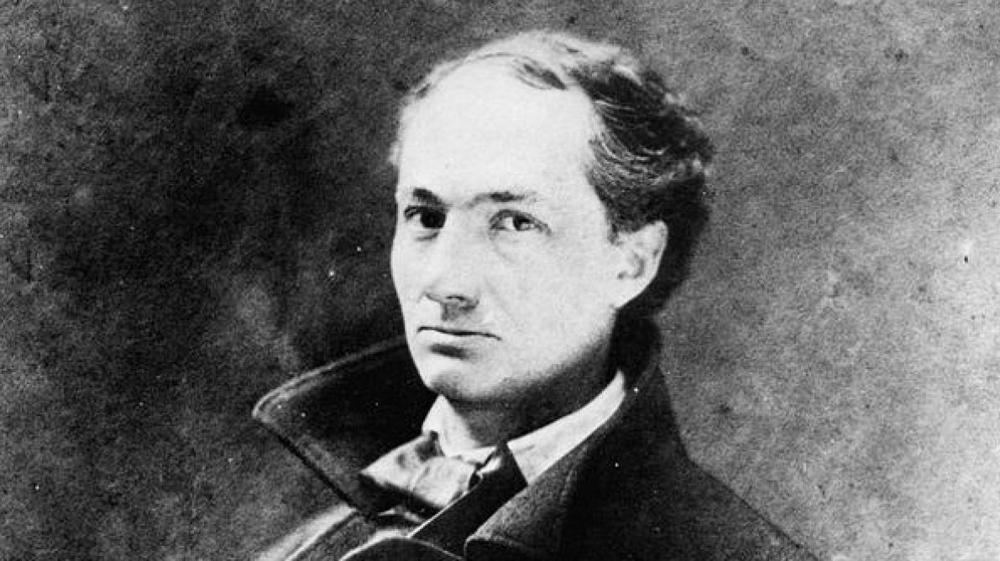

ÉLÉVATION
Au-dessus des étangs, au-dessus des vallées, Des montagnes, des bois, des nuages, des mers, Par delà le soleil, par delà les éthers, Par delà les confins des sphères étoilées,
Mon esprit, tu te meus avec agilité, Et, comme un bon nageur qui se pâme dans l’onde, Tu sillonnes gaiement l’immensité profonde Avec une indicible et mâle volupté.
Envole-toi bien loin de ces miasmes morbides ; Va te purifier dans l’air supérieur, Et bois, comme une pure et divine liqueur, Le feu clair qui remplit les espaces limpides.
Derrière les ennuis et les vastes chagrins Qui chargent de leur poids l’existence brumeuse, Heureux celui qui peut d’une aile vigoureuse S’élancer vers les champs lumineux et sereins ;
Celui dont les pensers, comme des alouettes, Vers les cieux le matin prennent un libre essor, — Qui plane sur la vie, et comprend sans effort Le langage des fleurs et des choses muettes !